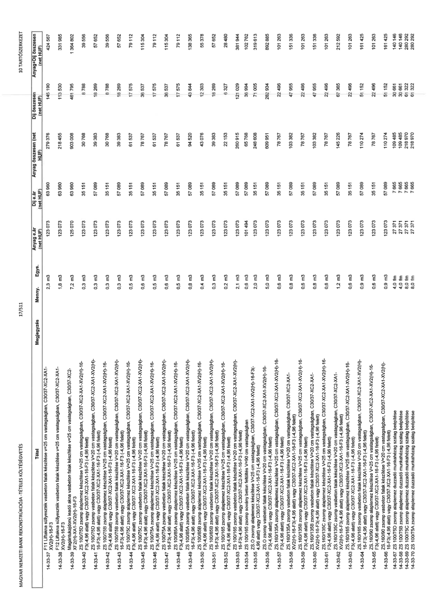

| Tétel | Megjegyzés | Menny. | Egys. | Anyag e.ár (net HUF) | Díj e.ár (net HUF) | Anyag összesen (net HUF) | Díj összesen (net HUF) | Anyag+Díj összesen (net HUF) |
|---|---|---|---|---|---|---|---|---|
| 14-33-36 F11 Liftakna süllyeszték vasbeton falak készítése v=25 cm vastagságban, C30/37-XC2-XA1-XV2(H)-16-F3 | NaN | 2,3 | m3 | 123 073 | 63 960 | 279 376 | 145 190 | 424 567 |
| 14-33-37 F12 Liftakna süllyeszték vasbeton falak készítése v=25 cm vastagságban, C30/37-XC2-XA1-XV2(H)-16-F3 | NaN | 1,8 | m3 | 123 073 | 63 960 | 218 455 | 113 530 | 331 985 |
| 14-33-38 Magántulajdonú leadó akna vasbeton falak készítése v=25 cm vastagságban, C30/37-XC2-XA1-XV2(H)-16-F3 | NaN | 7,2 | m3 | 123 073 | 63 960 | 903 008 | 461 795 | 1 364 802 |
| 14-33-39 ZS 100/75D zsomp alaplemez készítése v=25 cm vastagságban, C30/37-XC2-XA1-XV2(H)-16-F3(-4,96 alatt) vagy C30/37-XC2-XA1-16-F3 (-4,96 felett) | NaN | 0,3 | m3 | 123 073 | 35 151 | 30 768 | 8 788 | 39 556 |
| 14-33-40 ZS 100/75D zsomp vasbeton falak készítése v=20 cm vastagságban, C30/37-XC2-XA1-XV2(H)-16-F3(-4,96 alatt) vagy C30/37-XC2-XA1-16-F3 (-4,96 felett) | NaN | 0,3 | m3 | 123 073 | 57 089 | 39 383 | 18 269 | 57 652 |
| 14-33-41 ZS 100/75B zsomp alaplemez készítése v=25 cm vastagságban, C30/37-XC2-XA1-XV2(H)-16-F3(-4,96 alatt) vagy C30/37-XC2-XA1-16-F3 (-4,96 felett) | NaN | 0,3 | m3 | 123 073 | 35 151 | 30 768 | 8 788 | 39 556 |
| 14-33-42 ZS 100/75B zsomp vasbeton falak készítése v=20 cm vastagságban, C30/37-XC2-XA1-XV2(H)-16-F3(-4,96 alatt) vagy C30/37-XC2-XA1-16-F3 (-4,96 felett) | NaN | 0,3 | m3 | 123 073 | 57 089 | 39 383 | 18 269 | 57 652 |
| 14-33-43 ZS 100/75C zsomp alaplemez készítése v=25 cm vastagságban, C30/37-XC2-XA1-XV2(H)-16-F3(-4,96 alatt) vagy C30/37-XC2-XA1-16-F3 (-4,96 felett) | NaN | 0,5 | m3 | 123 073 | 35 151 | 61 537 | 17 575 | 79 112 |
| 14-33-44 ZS 100/75C zsomp vasbeton falak készítése v=20 cm vastagságban, C30/37-XC2-XA1-XV2(H)-16-F3(-4,96 alatt) vagy C30/37-XC2-XA1-16-F3 (-4,96 felett) | NaN | 0,6 | m3 | 123 073 | 57 089 | 78 767 | 36 537 | 115 304 |
| 14-33-45 ZS 100/75A zsomp alaplemez készítése v=25 cm vastagságban, C30/37-XC2-XA1-XV2(H)-16-F3(-4,96 alatt) vagy C30/37-XC2-XA1-16-F3 (-4,96 felett) | NaN | 0,5 | m3 | 123 073 | 35 151 | 61 537 | 17 575 | 79 112 |
| 14-33-46 ZS 100/75A zsomp vasbeton falak készítése v=20 cm vastagságban, C30/37-XC2-XA1-XV2(H)-16-F3(-4,96 alatt) vagy C30/37-XC2-XA1-16-F3 (-4,96 felett) | NaN | 0,6 | m3 | 123 073 | 57 089 | 78 767 | 36 537 | 115 304 |
| 14-33-47 ZS 100/85A zsomp alaplemez készítése v=25 cm vastagságban, C30/37-XC2-XA1-XV2(H)-16-F3(-4,96 alatt) vagy C30/37-XC2-XA1-16-F3 (-4,96 felett) | NaN | 0,5 | m3 | 123 073 | 35 151 | 61 537 | 17 575 | 79 112 |
| 14-33-48 ZS 100/85A zsomp vasbeton falak készítése v=20 cm vastagságban, C30/37-XC2-XA1-XV2(H)-16-F3(-4,96 alatt) vagy C30/37-XC2-XA1-16-F3 (-4,96 felett) | NaN | 0,8 | m3 | 123 073 | 57 089 | 94 520 | 43 844 | 138 365 |
| 14-33-49 ZS 100/85B zsomp alaplemez készítése v=25 cm vastagságban, C30/37-XC2-XA1-XV2(H)-16-F3(-4,96 alatt) vagy C30/37-XC2-XA1-16-F3 (-4,96 felett) | NaN | 0,4 | m3 | 123 073 | 35 151 | 43 076 | 12 303 | 55 378 |
| 14-33-50 ZS 100/85B zsomp vasbeton falak készítése v=20 cm vastagságban, C30/37-XC2-XA1-XV2(H)-16-F3(-4,96 alatt) vagy C30/37-XC2-XA1-16-F3 (-4,96 felett) | NaN | 0,3 | m3 | 123 073 | 57 089 | 39 383 | 18 269 | 57 652 |
| 14-33-51 ZS 100/165 zsomp alaplemez készítése v=25 cm vastagságban, C30/37-XC2-XA1-XV2(H)-16-F3(-4,96 alatt) vagy C30/37-XC2-XA1-16-F3 (-4,96 felett) | NaN | 0,2 | m3 | 123 073 | 35 151 | 22 153 | 6 327 | 28 480 |
| 14-33-52 ZS 100/165 zsomp vasbeton falak készítése v=20 cm vastagságban, C30/37-XC2-XA1-XV2(H)-16-F3(-4,96 alatt) vagy C30/37-XC2-XA1-16-F3 (-4,96 felett) | NaN | 2,1 | m3 | 123 073 | 57 089 | 260 915 | 121 029 | 381 944 |
| 14-33-53 ZS 100/165 zsomp sovány beton feltöltés v=90 cm vastagságban | NaN | 0,6 | m3 | 101 494 | 57 089 | 65 768 | 36 994 | 102 762 |
| 14-33-54 ZS.O zsomp alaplemez készítése v=25 cm vastagságban, C30/37-XC2-XA1-XV2(H)-16-F3(-4,96 alatt) vagy C30/37-XC2-XA1-16-F3 (-4,96 felett) | NaN | 2,0 | m3 | 123 073 | 35 151 | 248 608 | 71 005 | 319 613 |
| 14-33-55 ZS.O zsomp vasbeton falak készítése v=20 cm vastagságban, C30/37-XC2-XA1-XV2(H)-16-F3(-4,96 alatt) vagy C30/37-XC2-XA1-16-F3 (-4,96 felett) | NaN | 5,0 | m3 | 123 073 | 57 089 | 609 951 | 282 934 | 892 885 |
| 14-33-56 ZS.160/135A zsomp alaplemez készítése v=25 cm vastagságban, C30/37-XC2-XA1-XV2(H)-16-F3(-4,96 alatt) vagy C30/37-XC2-XA1-16-F3 (-4,96 felett) | NaN | 0,6 | m3 | 123 073 | 35 151 | 78 767 | 22 496 | 101 263 |
| 14-33-57 ZS.160/135A zsomp vasbeton falak készítése v=20 cm vastagságban, C30/37-XC2-XA1-XV2(H)-16-F3(-4,96 alatt) vagy C30/37-XC2-XA1-16-F3 (-4,96 felett) | NaN | 0,8 | m3 | 123 073 | 57 089 | 103 382 | 47 955 | 151 336 |
| 14-33-58 ZS.160/135B zsomp alaplemez készítése v=25 cm vastagságban, C30/37-XC2-XA1-XV2(H)-16-F3(-4,96 alatt) vagy C30/37-XC2-XA1-16-F3 (-4,96 felett) | NaN | 0,6 | m3 | 123 073 | 35 151 | 78 767 | 22 496 | 101 263 |
| 14-33-59 ZS.160/135B zsomp vasbeton falak készítése v=20 cm vastagságban, C30/37-XC2-XA1-XV2(H)-16-F3(-4,96 alatt) vagy C30/37-XC2-XA1-16-F3 (-4,96 felett) | NaN | 0,8 | m3 | 123 073 | 57 089 | 103 382 | 47 955 | 151 336 |
| 14-33-60 ZS.160/135C zsomp alaplemez készítése v=25 cm vastagságban, C30/37-XC2-XA1-XV2(H)-16-F3(-4,96 alatt) vagy C30/37-XC2-XA1-16-F3 (-4,96 felett) | NaN | 0,6 | m3 | 123 073 | 35 151 | 78 767 | 22 496 | 101 263 |
| 14-33-61 ZS.160/135C zsomp vasbeton falak készítése v=20 cm vastagságban, C30/37-XC2-XA1-XV2(H)-16-F3(-4,96 alatt) vagy C30/37-XC2-XA1-16-F3 (-4,96 felett) | NaN | 1,2 | m3 | 123 073 | 57 089 | 145 228 | 67 365 | 212 592 |
| 14-33-62 ZS.160/165 zsomp alaplemez készítése v=25 cm vastagságban, C30/37-XC2-XA1-XV2(H)-16-F3(-4,96 alatt) vagy C30/37-XC2-XA1-16-F3 (-4,96 felett) | NaN | 0,9 | m3 | 123 073 | 35 151 | 110 274 | 31 512 | 141 786 |
| 14-33-63 ZS.160/165 zsomp vasbeton falak készítése v=20 cm vastagságban, C30/37-XC2-XA1-XV2(H)-16-F3(-4,96 alatt) vagy C30/37-XC2-XA1-16-F3 (-4,96 felett) | NaN | 0,6 | m3 | 123 073 | 57 089 | 78 767 | 36 537 | 115 304 |
| 14-33-64 ZS.160/90 zsomp alaplemez készítése v=25 cm vastagságban, C30/37-XC2-XA1-XV2(H)-16-F3(-4,96 alatt) vagy C30/37-XC2-XA1-16-F3 (-4,96 felett) | NaN | 0,9 | m3 | 123 073 | 35 151 | 110 274 | 31 512 | 141 786 |
| 14-33-65 ZS 100/75D zsomp alaplemez duzzadó munkahézag szalag beépítése | NaN | 4,0 | fm | 27 371 | 7 665 | 109 485 | 30 661 | 140 146 |
| 14-33-66 ZS 100/75B zsomp alaplemez duzzadó munkahézag szalag beépítése | NaN | 4,0 | fm | 27 371 | 7 665 | 109 485 | 30 661 | 140 146 |
| 14-33-67 ZS 100/75C zsomp alaplemez duzzadó munkahézag szalag beépítése | NaN | 8,0 | fm | 27 371 | 7 665 | 218 970 | 61 322 | 280 292 |
| 14-33-68 ZS 100/75A zsomp alaplemez duzzadó munkahézag szalag beépítése | NaN | 8,0 | fm | 27 371 | 7 665 | 218 970 | 61 322 | 280 292 |
